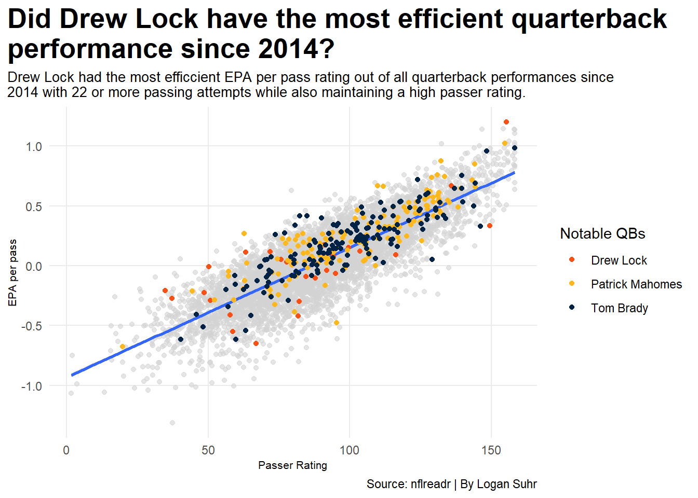
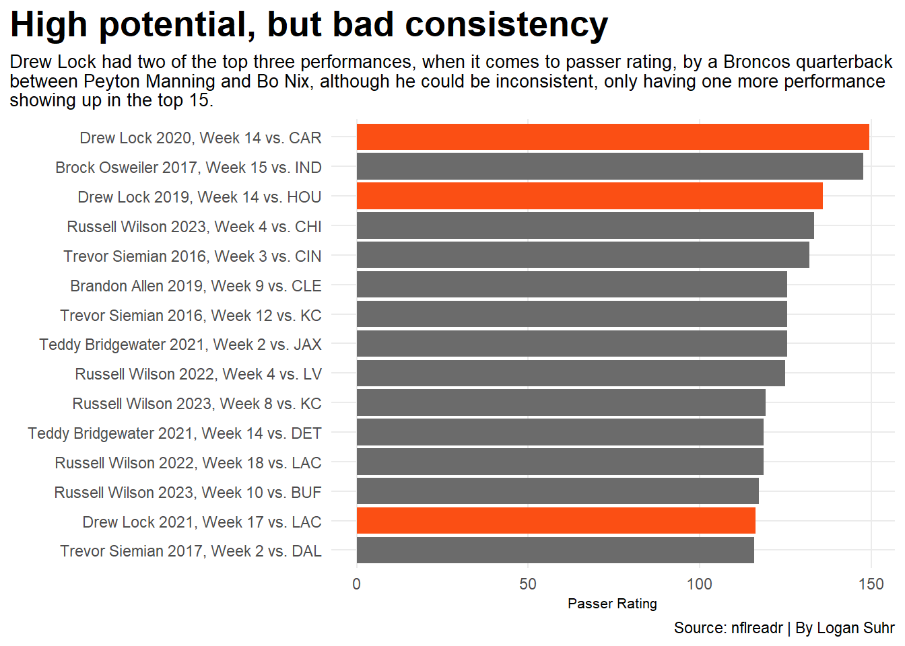
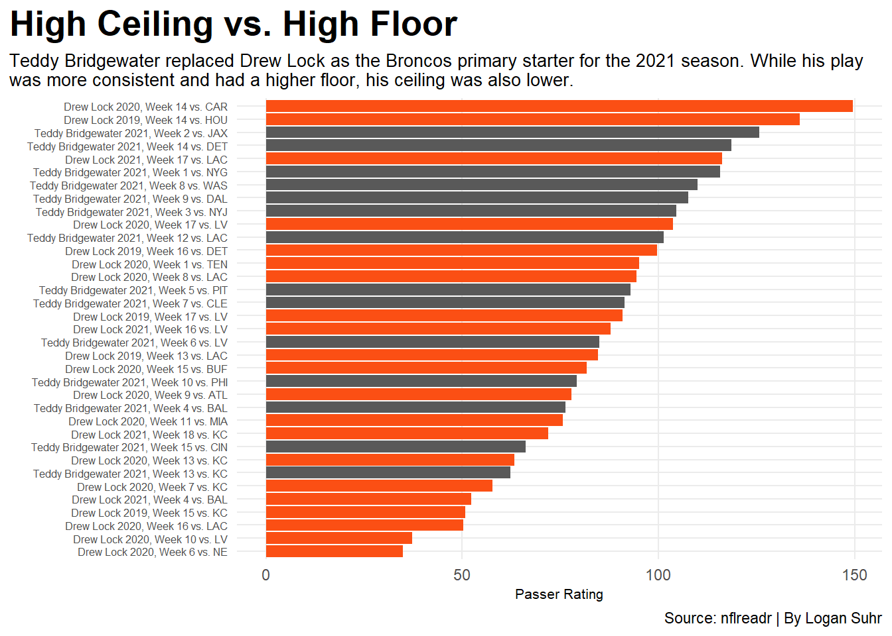

Drew Lock should have been the Denver Broncos franchise quarterback
NFL
Broncos
Quarterbacks
Author
Logan Suhr
Published
April 9, 2026
Between Peyton Manning and Bo Nix, the Denver Broncos went through a carousel of horrific quarterback play, but did they have to? Drew Lock was drafted 42nd overall in the 2019 NFL Draft by the Broncos and has since become a career backup, but there was once a time when fans were hopeful for his future as Denver’s quarterback after he went 4-1 in his rookie season, after getting the starting position due to a Joe Flacco injury and a Brandon Allen benching.
After Lock got a full year of starting experience in 2020, many Broncos fans were already done with him. He had some lackluster performances and could be turnover-prone, but others could see the potential and wanted to give Lock more time to develop. He was never given this opportunity, however, because in the offseason the Broncos traded with the Carolina Panthers for Teddy Bridgewater, and Bridgewater was named the starter before the regular season started.
Some fans were happy with the decision because he provided stability at the position, but others wanted Lock to start because of Bridgewater’s lack of upside; the team essentially knew exactly what they were going to get from Bridgewater.
We are going to analyze performance data from Drew Lock that shows why he should have been Denver’s franchise guy, or at least given another chance to become the guy. We will be analyzing stats such as the passer rating, which analyzes a quarterback’s performance efficiency by combining passing percentage, passing touchdowns, and passing interceptions per attempt into one stat. It has a minimum possible score of 0 and a maximum possible score of 158.3. We will also look at the expected points added (EPA) stat, which calculates how many potential points a quarterback adds or subtracts to their team on each play using down, distance to go, and field position.
The first question we’ll ask to help us see Drew Lock’s potential is, was his ceiling really that high?
Code
library(tidyverse)library(nflreadr)library(gt)newstats14 <-read_csv("stats14.csv")newstats15 <-read_csv("stats15.csv")newstats16 <-read_csv("stats16.csv")newstats17 <-read_csv("stats17.csv")newstats18 <-read_csv("stats18.csv")newstats19 <-read_csv("stats19.csv")newstats20 <-read_csv("stats20.csv")newstats21 <-read_csv("stats21.csv")newstats22 <-read_csv("stats22.csv")newstats23 <-read_csv("stats23.csv")newstats24 <-read_csv("stats24.csv")newstats25 <-read_csv("stats25.csv")stats <-bind_rows(newstats14, newstats15, newstats16, newstats17, newstats18, newstats19, newstats20, newstats21, newstats22, newstats23, newstats24, newstats25)goodqbstats <-read_csv("qbstats.csv")goodstats <- stats |>filter(attempts >=22) |>mutate( passer_rating =(pmax(0, pmin(2.375,(completions/attempts-0.3)*5))+pmax(0, pmin(2.375,(passing_yards/attempts-3)*0.25))+pmax(0, pmin(2.375,(passing_tds/attempts)*20))+pmax(0, pmin(2.375,2.375-(passing_interceptions/attempts*25))))/6*100 ,epa_per_pass = passing_epa/attempts )drewlock <- goodstats |>filter(player_display_name =="Drew Lock")PM <- goodstats |>filter(player_display_name =="Patrick Mahomes")TB <- goodstats |>filter(player_display_name =="Tom Brady")ggplot() +geom_point(data=goodstats, aes(x=passer_rating, y=epa_per_pass), color="lightgrey", alpha=.6) +geom_smooth(data=goodstats, aes(x=passer_rating, y=epa_per_pass),method=lm) +geom_point(data=drewlock, aes(x=passer_rating, y=epa_per_pass, color="Drew Lock"))+geom_point(data=PM, aes(x=passer_rating, y=epa_per_pass, color="Patrick Mahomes")) +geom_point(data=TB, aes(x=passer_rating, y=epa_per_pass, color="Tom Brady"))+scale_color_manual(values=c("#FB4F14", "#FFB81C", "#002244"), name="Notable QBs") +labs(title="Did Drew Lock have the most efficient quarterback \nperformance since 2014?", subtitle="Drew Lock had the most efficcient EPA per pass rating out of all quarterback performances since \n2014 with 22 or more passing attempts while also maintaining a high passer rating.", y="EPA per pass", x ="Passer Rating", caption="Source: nflreadr | By Logan Suhr")+theme_minimal() +theme(plot.title =element_text(size =20, face ="bold"),axis.title =element_text(size =8), plot.subtitle =element_text(size=10), panel.grid.minor =element_blank(),plot.title.position ="plot" )

Since 2014, no other quarterback with 22 or more attempts has had an EPA per pass rating as good as Drew Lock. He also maintained one of the higher passer rating performances. Which is something you probably would not expect, but it shows that while Lock could be inconsistent, his peak single-game efficiency is higher than anything even Patrick Mahomes or Tom Brady did in a time span that includes Mahomes entire career.
This performance came in a 2024 game when Lock was playing for the New York Giants, and he upset a playoff-hopeful Indianapolis Colts team. Lock also had some very solid performances while playing for the Broncos, so why did he get replaced?
Code
goodstats2 <- stats |>filter(team =="DEN", attempts >=15, season =="2016"| season =="2017"| season =="2018"| season =="2019"| season =="2020"| season =="2021"| season =="2022"| season =="2023") |>mutate( passer_rating =(pmax(0, pmin(2.375,(completions/attempts-0.3)*5))+pmax(0, pmin(2.375,(passing_yards/attempts-3)*0.25))+pmax(0, pmin(2.375,(passing_tds/attempts)*20))+pmax(0, pmin(2.375,2.375-(passing_interceptions/attempts*25))))/6*100 ,epa_per_pass = passing_epa/attempts,passing_percentage = completions/attempts ) |>mutate(PlayerSeason =paste0(player_display_name, " ", season, ", Week ", week, " vs. ", opponent_team)) |>top_n(15,wt=passer_rating)goodstats4 <- stats |>filter(team =="DEN", attempts >=15, season =="2016"| season =="2017"| season =="2018"| season =="2019"| season =="2020"| season =="2021"| season =="2022"| season =="2023") |>mutate( passer_rating =(pmax(0, pmin(2.375,(completions/attempts-0.3)*5))+pmax(0, pmin(2.375,(passing_yards/attempts-3)*0.25))+pmax(0, pmin(2.375,(passing_tds/attempts)*20))+pmax(0, pmin(2.375,2.375-(passing_interceptions/attempts*25))))/6*100 ,epa_per_pass = passing_epa/attempts,passing_percentage = completions/attempts ) |>mutate(PlayerSeason =paste0(player_display_name, " ", season, ", Week ", week, " vs. ", opponent_team))DL <- goodstats2 |>filter(player_display_name =="Drew Lock")TBaDL <- goodstats4 |>filter(player_display_name =="Drew Lock"| player_display_name =="Teddy Bridgewater")DL2 <- goodstats4 |>filter(player_display_name =="Drew Lock")ggplot() +geom_bar(data=goodstats2, aes(x=reorder(PlayerSeason, passer_rating), weight=passer_rating),fill="#6b6b6b") +geom_bar(data=DL, aes(x=reorder(PlayerSeason, passer_rating), weight=passer_rating), fill="#FB4F14") +coord_flip() +labs(x="", y="Passer Rating", title="High potential, but bad consistency ", subtitle="Drew Lock had two of the top three performances, when it comes to passer rating, by a Broncos quarterback \nbetween Peyton Manning and Bo Nix, although he could be inconsistent, only having one more performance \nshowing up in the top 15.", caption="Source: nflreadr | By Logan Suhr" ) +theme_minimal() +theme(plot.title =element_text(size =20, face ="bold"),axis.title =element_text(size =8), plot.subtitle =element_text(size=10), panel.grid.minor =element_blank(),plot.title.position ="plot" )

Code
ggplot() +geom_bar(data=TBaDL, aes(x=reorder(PlayerSeason, passer_rating), weight=passer_rating)) +geom_bar(data=DL2, aes(x=reorder(PlayerSeason, passer_rating), weight=passer_rating), fill="#FB4F14") +coord_flip() +labs(x="", y="Passer Rating", title="High Ceiling vs. High Floor ", subtitle="Teddy Bridgewater replaced Drew Lock as the Broncos primary starter for the 2021 season. While his play \nwas more consistent and had a higher floor, his ceiling was also lower.", caption="Source: nflreadr | By Logan Suhr" ) +theme_minimal() +theme(plot.title =element_text(size =20, face ="bold"),axis.title =element_text(size =8), axis.text.y =element_text(size =6),plot.subtitle =element_text(size=10), panel.grid.minor =element_blank(),plot.title.position ="plot" )

In the period of time between Peyton Manning and Bo Nix, Drew Lock holds two of the three highest performances based on quarterback rating for the Broncos, but he only appears one more time in the top 15. He also has some significantly better performances than his replacement, Teddy Bridgewater, as well as some significantly worse.
Denver took the safe option in starting Bridgewater due to Lock’s high ceiling, low floor potential, but why, after a full season of starting, was Lock unable to develop and start playing at a higher level more consistently?
Code
goodstats3 <- stats |>filter(player_display_name =="Drew Lock", attempts >=15) |>mutate( passer_rating =(pmax(0, pmin(2.375,(completions/attempts-0.3)*5))+pmax(0, pmin(2.375,(passing_yards/attempts-3)*0.25))+pmax(0, pmin(2.375,(passing_tds/attempts)*20))+pmax(0, pmin(2.375,2.375-(passing_interceptions/attempts*25))))/6*100 ,epa_per_pass = passing_epa/attempts,passing_percentage = completions/attempts ) goodqbstats |>select(offensive_coordinator, Team, Season, avg_yds, avg_tds, avg_qbr, avg_completion_percentage) |>gt() |>cols_label(avg_yds ="Average Yards",avg_tds ="Average Touchdowns", avg_completion_percentage ="Average Completion%",avg_qbr ="Average Passer Rating",offensive_coordinator ="Play-Caller" ) |>tab_header(title ="Drew Lock was not the problem, Pat Shurmur was ",subtitle ="Lock had his worst two seasons on a per game basis when it comes to average completion percentage, and QBR as well as his single season worst average for yards per game and touchdowns per in Denver under Shurmur." ) |>tab_style(style =cell_text(color ="black", weight ="bold", align ="left"),locations =cells_title("title") ) |>tab_style(style =cell_text(color ="black", align ="left"),locations =cells_title("subtitle") ) |>tab_source_note(source_note =md("**By:** Logan Suhr | **Source:** nflreadr") ) |>tab_style(locations =cells_column_labels(columns =everything()),style =list(cell_borders(sides ="bottom", weight =px(3)),cell_text(weight ="bold", size=12) )) |>opt_row_striping() |>opt_table_lines("none")|>tab_style(style =list(cell_fill(color ="#FF0000"),cell_text(color ="white") ),locations =cells_body(rows = offensive_coordinator =="Pat Shurmur") ) |>fmt_percent(columns =c(avg_completion_percentage),decimals =2 ) |>fmt_number(columns =c(avg_tds, avg_qbr, avg_yds),decimals =2 )
Drew Lock was not the problem, Pat Shurmur was
Lock had his worst two seasons on a per game basis when it comes to average completion percentage, and QBR as well as his single season worst average for yards per game and touchdowns per in Denver under Shurmur.
Play-Caller
Team
Season
Average Yards
Average Touchdowns
Average Passer Rating
Average Completion%
Rich Scangarello
DEN
2019
218.40
1.40
92.36
65.45%
Pat Shurmur
DEN
2020
256.08
1.58
76.77
58.22%
Pat Shurmur
DEN
2021
182.00
0.75
82.07
61.83%
Shane Waldron
SEA
2022
0.00
0.00
0.00
0.00%
Shane Waldron
SEA
2023
240.00
1.50
93.00
68.82%
Brian Daboll
NYG
2024
236.40
1.60
82.37
62.93%
Klint Kubiak
SEA
2025
0.00
0.00
0.00
0.00%
By: Logan Suhr | Source: nflreadr
Pat Shurmur, who was the offensive coordinator in Denver for the 2020 and 2021 seasons under head coach Vic Fangio, was not able to get as much out of Drew Lock efficiency-wise as literally any other play caller Lock has had throughout his career. He had his worst completion percentage and passer rating seasons under Shurmur, and while in 2020 he had better average numbers volume-wise, his efficiency was atrocious.
With Drew Lock’s high potential, he should have been given another full season to develop with a competent coaching staff that believed in him and could’ve help him improve his game and learn from mistakes. Then he could have been the franchise quarterback the Denver Broncos spent so much time searching for.
Giving a quarterback more time to develop worked out for the Bills and Josh Allen, and Lock’s current teammate, Sam Darnold, who was considered a massive draft bust, went from “seeing ghosts” to winning Super Bowls and tying Tom Brady for most wins in a two-season stretch after being given time to develop and a competent coaching staff.